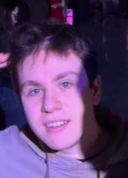

E STUDIO

Ejemplo ( tres perspectivas )
El texto y las imágenes siguen siendo HTML real, invisible. Lo que ves es su copia en WebGL, pegada a la misma posición mientras scrolleás, y por eso se pueden deformar, pixelar o mirar a través de una lente.
Ficha técnica
WebGL + DOM: portada y galería esférica
Cómo funciona
- Un solo canvas global fijo detrás de la página. Cada elemento con
data-gl(texto o imagen) queda en el DOM conopacity: 0—accesible y seleccionable— y se dibuja como un plano WebGL en su lugar. - Texto en WebGL: se leen los estilos calculados (fuente, tamaño, tracking, color) y se pinta en un canvas 2D del tamaño del elemento; ese canvas es la textura del plano.
- Sincronía con el scroll: las posiciones se miden una vez (y al redimensionar) en coordenadas de página; en cada cuadro solo se resta el scroll. El scroll suave mueve el contenido con
transformy el canvas usa el mismo valor en el mismo cuadro.data-reflowmide en cada cuadro (el footer con parallax). - Distorsión fluida: un flowmap de 128×128 en ping-pong guarda la velocidad del mouse y se disipa. El título y la portada (
data-fluid) desplazan su UV con él. - Efectos por imagen: el mismo plano con distinto shader: liquid (ondas bajo el cursor), pixel (bloques que crecen cerca del cursor) y lens (lupa con dispersión RGB).
Para reutilizar
- Marcá un
<img>condata-gl="image"ydata-effect="liquid|pixel|lens|hero";data-variant0/1/2 = color, invertido, grises. Un<span>condata-gl="text"se vuelve WebGL. - Las letras que ruedan (
data-roll) son solo DOM + CSS: cada letra entra desde arriba o abajo al azar cuando la palabra aparece. - Los links con
data-transitioncubren la página con píxeles, navegan y la página nueva se destapa cuando cargó sus texturas.data-preloadadelanta la carga. - Sin WebGL o con
prefers-reduced-motion: el DOM queda visible tal cual, sin scroll suave ni efectos, y la transición es un fundido. - La foto es
media/foto.png(144×200): para más nitidez, reemplazala por una más grande.